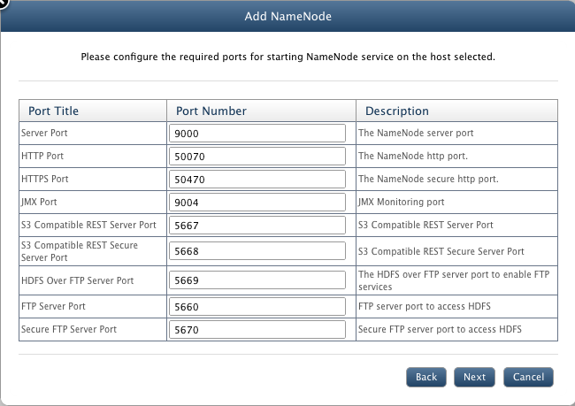

Hadoop NameNode
In this chapter
NameNode is the centerpiece of QueryIO cluster. This chapter explains HDFS NameNode and related functions.
Various aspects of NameNode explained are:
What is NameNode
The NameNode is the centerpiece of an HDFS file system. It keeps the directory tree of all files in the file system in form of metadata, and tracks where across the cluster, the file data is kept.
It does not store the data of these files itself. Client applications talk to the NameNode whenever they wish to locate a file, or when they want to add/copy/move/delete a file.
The NameNode responds the successful requests by returning a list of relevant DataNode servers where the data lives.
An HDFS cluster consists of a single NameNode, a master server that manages the file system namespace and regulates access to files by clients.
There are two types of NameNodes in a cluster:
- Active NameNode
- StandBy NameNode
The Active NameNode is responsible for all client operations in the cluster, while the Standby NameNode is simply acting as a slave. The Active NameNode is a single point of failure for the HDFS cluster. When the NameNode goes down, the file system will go offline. There is an optional Standby NameNode that can be hosted on a separate machine.
So when active NameNode goes down, standby name node can be used as active NameNode and file system will be safe. This process is called failover.
To manage NameNodes on your cluster, go to HDFS > NameNode.
NameNode Summary
Following details about NameNode are displayed:
- I/O summary: A pie chart displaying number of file reads against file writes performed on HDFS.
- Status summary: It displays the following:
- Total Bytes Read: Amount of data read from the cluster in bytes.
- Total Bytes Written: Amount of data imported to the cluster in bytes.
- Total Blocks Read: Total number of blocks read. If block size is 20KB and 100KB data has been read, then number of blocks read would be 5.
- Total Blocks Written: Total number of blocks written on cluster. If block size is 20KB and a 500KB file is imported, then blocks written would be 25.
- Total File Read: Total number of files read from the cluster.
- Total File Written: Total number of files created on the cluster.
- Total File Appended: Total number of files updated.
- Total File Renamed: Total number of files renamed.
- Total List File Ops: Number of requests to list the files on the cluster.
- Total Delete File Ops: Number of delete operations performed on cluster.
- NameNode Summary: Details about NameNode.
- Activity Summary: Details of the activities performed on NameNodes like Health Check or Balancer.
NameNode Summary
It displays certain attributes about the NameNode in the cluster in a tabular form. Summary attributes contain:
- NameNode: Unique identifier and IP address of the NameNode.
- Type: Mode of the NameNode as Non-HA or HA(High Availability).
- JVM Heap: The Java virtual machine heap is the area of memory used by the JVM, for dynamic memory allocation.
- File Reads: Number of files read from cluster.
- File Writes: Total files stored on cluster.
- Alerts: Alerts are generated when rules defined by user violates. It displays number of alerts generated.
- CPU Usage: Memory usage of NameNode system.
- RAM: Amount of random access memory available at NameNode.
- N/W Rcvd: Rate of data received through network in bytes/s.
- N/W Sent: Rate of data sent through network in bytes/s.
- Disk Read: Rate of data read from cluster in bytes/s.
- Disk Write: Rate of data written to cluster in bytes/s.
- Safemode: Safemode status as On or Off.
- Logs: Click on respective link to view 'stdout/stderr' logs or 'full log file'.
- Status: State of the NameNode i.e started or stopped or not responding.
- Monitoring: State of NameNode monitoring i.e. whether NameNode monitoring is started or stopped or not responding.
Activity Summary
Displays activity details performed on NameNode. Activities supported by QueryIO are 'Health Check' and 'Balancer'.
- NameNode: Unique identifier of the NameNode on which activity was performed.
- Start time: Time when activity was executed.
- Activity: Activity which was performed like Health Check or Balancer.
- Status: Result of the activity performed - Completed or Failed.
- Log: Click to view log of the activity if available.
Add NameNode
Add Active NameNode
To add a new NameNode to your cluster, click Add button. It will bring forth a wizard to add a new NameNode.
- NameNode Type: For non HA cluster, select Active
In an HA cluster, two separate machines are configured as NameNodes.
At any point of time, exactly one of the NameNodes is in the Active state,
and the other is in Standby state. The Active NameNode is responsible for all
client operations in the cluster, while the Standby is simply acting as a slave,
maintaining enough state to provide a fast failover if necessary. If you are configuring HA cluster, you should add Active
as well as StandBy nodes.
- Hostname/IP: Select Hostname/IP from the list of registered hosts.
- Database: Select database to be linked with NameNode (Optional).
- Metadata Database : To store HDFS metadata, Extended Metadata & user defined tags.
- AdHoc Analysis Database : To store processed data as a result of Big Data analysis.
For every NameNode, there must be a database linked with it to support NameNode federation. All the metadata / tags associated with the data in given namespace is stored in this link in database.
First NameNode can be linked to default database(MetaStore) but for every other NameNode you need to define a new database configuration and link NameNode with it.
You can define new database configuration directly by clicking on Add database or from Manage Databases page under Hadoop SQL tab.
- Unique Identifier: A unique name for the node.
- Click Next.
- Configure the ports for various QueryIO services.
- Server Port: The NameNode server port.
- HTTP Port: The NameNode http port.
- HTTPS Port: The NameNode secure http port.
- JMX Port: JMX Monitoring port.
- S3 Compatible REST Server Port: S3 Compatible REST Server Port.
- S3 Compatible REST Secure Server Port: S3 Compatible REST Secure Server Port
- HDFS Over FTP Server Port: Port to enable FTP services.
- FTP Server Port: Port to access HDFS through FTP.
- Secure FTP Server Port: Secure FTP server port to access HDFS

- Disk: Select from available disks at the selected host.
- Directory Path: Enter valid installation directory path for the node which will be the local repository of the node on that host.
- Start NameNode services after installation: Select check box, if you want to start the NameNode just after it is installed. You can start the node later also.
- Click on Save to add new node.
Add Standby NameNode
To add a new Stanby NameNode to your cluster, you must have NFS mounted shared directory. Click here to see how to configure NFS mount point.
Click Add button on NameNode page. It will bring forth a wizard to add a new NameNode.
- NameNode Type: Select Standby.
- Hostname/IP: Select Hostname/IP from the list of registered hosts.
- NameNode: Select active NameNode to be linked with standby NameNode.
- Unique Identifier: A unique name for the node.
- Configure the ports for various NameNode services.
- Disk: Select from available disks at the selected host.
- Directory Path: Enter valid installation directory path for the node which will be the local repository of the node on that host.
- High Availability With: Select method to be used with HA feature.
- Shared Directory Path: In case of NFS mount, Enter NFS mounted directory path.
- Select Journal Node: In case of QJM, Select already configured Journal Node.
- Click on Save to add new node.
Start/Stop NameNode
To start or stop a NameNode, select the check box against the node and click on Start or Stop button respectively.
Delete NameNode
NameNode can not be deleted until there is no DataNode in the cluster. Click here to read more.
Start/Stop Monitoring
JMX monitoring takes place which checks NameNode's status, CPU Usage, RAM, N/W Rcvd, N/W Sent, Disk Read and Disk Write. To start or stop NameNode Monitoring, select the check box against the node and click on Start Monitoring or Stop Monitoring button respectively.
Configure NameNode
Select the NameNode and click on Configure. NameNode related properties will be displayed. You can update the settings and click Save to store changes. But you must have privileges to configure NameNode.
You can also add custom configuration properties related to namenode or delete any configuration property.
Run Health Check
Health Check makes sure that the data stored on HDFS is safe and not corrupted. Running the health check will scan all the files in the system and returns status as "Completed" or "Failed".
Every file will be checked by using checksum, and if an error is found in any file, it will return failed status. The result of Health check will be added to activity summary of NameNode.
To start a health check, select the NameNode and click on Health Check.
Run Balancer
Work of balancer is basically to distribute data evenly among all the DataNodes. Balancer will scan amount of data storage at all the nodes and distributes them evenly at all nodes. Suppose there are two DataNodes,
one node has 15GB of data and other node has 5GB of data. Now balancer will check both nodes and distribute the whole 20GB data evenly among both nodes i.e 10GB on each node.
FailOver
Failover is switching to a redundant or standby NameNode upon the failure or abnormal termination of the previously active NameNode.
If NameNode goes down, failover feature will automatically switch active NameNode to standby mode and standby NameNode to active mode. Thus system will not fail.
This action can be reversed, once failed NameNode has recovered.
Click on FailOver to perform failover process.
High Availability
High Availability(HA) feature of QueryIO will make sure that QueryIO agent service on host is always available.
To make it possible, in every two minutes(configurable), host checks itself whether the QueryIO agent process is up or not and if it is down, then host will start QueryIO agent process on itself.
HDFS has always had a well-known single point of failure which impacts HDFS's availability:
The system relies on a single NameNode to coordinate access to the file system data and if NameNode is down, then the whole cluster is unavailable.
Hadoop introduced its own High Availability feature to ease this problem.
Click here to read more.
Safemode
During start up NameNode loads the filesystem state from fsimage and edits log file. It then waits for DataNodes to report their blocks so that it does not prematurely start replicating the blocks though enough replicas already exist in the cluster. During this time NameNode stays in safemode. A Safemode for NameNode is essentially a read-only mode for the HDFS cluster, where it does not allow any modifications to filesystem or blocks. Normally NameNode gets out of safemode automatically at the beginning.
NameNode Details
NameNode in the menu displays the NameNodes in the cluster. Just click on the NameNode name in the menu to get all the details of the NameNode system. Details are displayed in the form of charts.
NameNode details contain:
- I/O Summary: A pie chart displaying number of file reads against file writes performed on HDFS.
- Status summary: It has various details about NameNode:
- JVM Heap Used: Amount of storage used by java virtual machine for dynamic memory allocation.
- JVM Started On: Time when java virtual machine was started on NameNode.
- Total File Reads: Number of files read from cluster.
- Total File Writes: Total files stored on cluster.
- Total Alerts: Number of alerts generated on NameNode.
- Monitoring Data: Shows monitoring data of the NameNode host machine. It uses JVM matrix to display data in form of charts. Time interval between which data is displayed can be varied from 1 day to 360 days.
This data is further used to generate reports and forecast. It can also be used diagnostic purposes.
Various charts displayed are:
- Block Operations: Shows Number of blocks added with respect to time.
- File Operations: Number of file operations like Create File, Delete File, List File, Total Files Read, Total Files Written performed.
- CPU Usage: Amount of CPU usage
- Heap Memory: Heap memory committed and heap memory used with respect to time in MB.
- Non Heap Memory: Non heap memory committed and used with respect to time in MB.
- Threads: Number of Running, Blocked, Waiting, Timed Waiting, Terminated, New threads with respect to time period.
- GC Count: Total GC Count with respect to time.
- GC Time: Total time required for GC in ms.
- Network: Bytes received and sent through network in bytes/s.
- Disk: Bytes read and bytes written by user in Bytes/s.
Copyright © 2017 QueryIO Corporation. All Rights Reserved.
QueryIO, "Big Data Intelligence" and the QueryIO Logo are trademarks
of QueryIO Corporation. Apache, Hadoop and HDFS are trademarks of The Apache Software Foundation.